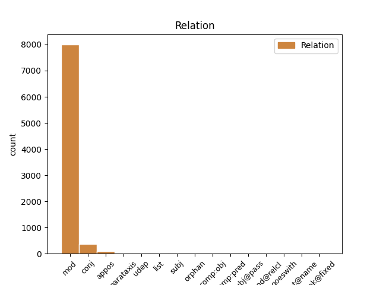
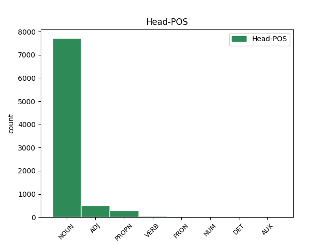
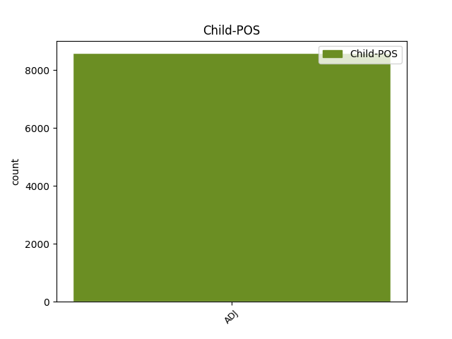

Distribution of features within this leaf



Agreement Rules sorted by frequency.
- When the dependent token is the modifer(mod) of the head token, and the head token is NOUN and the dependent token is ADJ.
1 В _ _ _ _ 0 _ _ _
2 те _ _ _ _ 0 _ _ _
3 годы _ _ _ _ 0 _ _ _
4 в _ _ _ _ 0 _ _ _
5 селе _ _ _ _ 0 _ _ _
6 был _ _ _ _ 0 _ _ _
7 птичник _ _ _ _ 0 _ _ _
8 и _ _ _ _ 0 _ _ _
9 разбит _ _ _ _ 0 _ _ _
10 колхозный колхозный ADJ JJL Case=Nom|Degree=Pos|Gender=Masc|Number=Sing 11 mod _ _
11 сад сад NOUN NN Animacy=Inan|Case=Nom|Gender=Masc|Number=Sing 0 _ _ _
12 . _ _ _ _ 0 _ _ _
1 172-я _ _ _ _ 0 _ _ _
2 стрелковая _ _ _ _ 0 _ _ _
3 дивизия _ _ _ _ 0 _ _ _
4 -- _ _ _ _ 0 _ _ _
5 воинское _ _ _ _ 0 _ _ _
6 соединение _ _ _ _ 0 _ _ _
7 СССР _ _ _ _ 0 _ _ _
8 в _ _ _ _ 0 _ _ _
9 годы _ _ _ _ 0 _ _ _
10 советско-финской советско-финский ADJ JJL Case=Gen|Degree=Pos|Gender=Fem|Number=Sing 0 _ _ _
11 и _ _ _ _ 0 _ _ _
12 Великой _ _ _ _ 0 _ _ _
13 Отечественной отечественный ADJ JJL Case=Gen|Degree=Pos|Gender=Fem|Number=Sing 10 conj _ _
14 войн _ _ _ _ 0 _ _ _
15 . _ _ _ _ 0 _ _ _
1 После _ _ _ _ 0 _ _ _
2 освобождения _ _ _ _ 0 _ _ _
3 Крыма _ _ _ _ 0 _ _ _
4 во _ _ _ _ 0 _ _ _
5 время _ _ _ _ 0 _ _ _
6 Великой _ _ _ _ 0 _ _ _
7 Отечественной _ _ _ _ 0 _ _ _
8 войны _ _ _ _ 0 _ _ _
9 состоялась _ _ _ _ 0 _ _ _
10 депортация _ _ _ _ 0 _ _ _
11 населения _ _ _ _ 0 _ _ _
12 -- _ _ _ _ 0 _ _ _
13 согласно _ _ _ _ 0 _ _ _
14 Постановлению _ _ _ _ 0 _ _ _
15 ГКО _ _ _ _ 0 _ _ _
16 No _ _ _ _ 0 _ _ _
17 5859 _ _ _ _ 0 _ _ _
18 от _ _ _ _ 0 _ _ _
19 11 _ _ _ _ 0 _ _ _
20 мая _ _ _ _ 0 _ _ _
21 1944 _ _ _ _ 0 _ _ _
22 года _ _ _ _ 0 _ _ _
23 , _ _ _ _ 0 _ _ _
24 18 _ _ _ _ 0 _ _ _
25 мая _ _ _ _ 0 _ _ _
26 крымские _ _ _ _ 0 _ _ _
27 татары _ _ _ _ 0 _ _ _
28 Нижнего _ _ _ _ 0 _ _ _
29 Аиргуля _ _ _ _ 0 _ _ _
30 были _ _ _ _ 0 _ _ _
31 депортированы _ _ _ _ 0 _ _ _
32 в _ _ _ _ 0 _ _ _
33 Среднюю средний ADJ JJL Case=Acc|Degree=Pos|Gender=Fem|Number=Sing 34 mod _ _
34 Азию Азия PROPN NNP Animacy=Inan|Case=Acc|Gender=Fem|Number=Sing 0 _ _ _
35 . _ _ _ _ 0 _ _ _
1 `` _ _ _ _ 0 _ _ _
2 Адад _ _ _ _ 0 _ _ _
3 потомство _ _ _ _ 0 _ _ _
4 храни _ _ _ _ 0 _ _ _
5 '' _ _ _ _ 0 _ _ _
6 ; _ _ _ _ 0 _ _ _
7 dIM _ _ _ _ 0 _ _ _
8 , _ _ _ _ 0 _ _ _
9 MU _ _ _ _ 0 _ _ _
10 , _ _ _ _ 0 _ _ _
11 ŠEŠ _ _ _ _ 0 _ _ _
12 или _ _ _ _ 0 _ _ _
13 mdIM _ _ _ _ 0 _ _ _
14 , _ _ _ _ 0 _ _ _
15 MU _ _ _ _ 0 _ _ _
16 , _ _ _ _ 0 _ _ _
17 ŠEŠ _ _ _ _ 0 _ _ _
18 ) _ _ _ _ 0 _ _ _
19 -- _ _ _ _ 0 _ _ _
20 касситский _ _ _ _ 0 _ _ _
21 царь _ _ _ _ 0 _ _ _
22 Вавилонии _ _ _ _ 0 _ _ _
23 , _ _ _ _ 0 _ _ _
24 правил _ _ _ _ 0 _ _ _
25 приблизительно _ _ _ _ 0 _ _ _
26 в _ _ _ _ 0 _ _ _
27 1219 1219 ADJ ORD Case=Loc|Degree=Pos|Gender=Masc|Number=Sing 0 _ _ _
28 -- _ _ _ _ 0 _ _ _
29 1188 1188 ADJ ORD Case=Loc|Degree=Pos|Gender=Masc|Number=Sing 27 mod _ _
30 годах _ _ _ _ 0 _ _ _
31 до _ _ _ _ 0 _ _ _
32 н. _ _ _ _ 0 _ _ _
33 э _ _ _ _ 0 _ _ _
34 . _ _ _ _ 0 _ _ _
1 Член _ _ _ _ 0 _ _ _
2 , _ _ _ _ 0 _ _ _
3 корреспондент _ _ _ _ 0 _ _ _
4 ( _ _ _ _ 0 _ _ _
5 1993 _ _ _ _ 0 _ _ _
6 ) _ _ _ _ 0 _ _ _
7 , _ _ _ _ 0 _ _ _
8 академик академик NOUN NN Animacy=Anim|Case=Nom|Gender=Masc|Number=Sing 0 _ _ _
9 ( _ _ _ _ 0 _ _ _
10 2002 2002 ADJ ORD Case=Nom|Degree=Pos|Gender=Masc|Number=Sing 8 appos _ SpaceAfter=No
11 ) _ _ _ _ 0 _ _ _
12 Австрийской _ _ _ _ 0 _ _ _
13 Академии _ _ _ _ 0 _ _ _
14 наук _ _ _ _ 0 _ _ _
15 . _ _ _ _ 0 _ _ _
1 Жан Жан PROPN NNP Animacy=Anim|Case=Nom|Gender=Masc|Number=Sing 0 _ _ _
2 Шевре _ _ _ _ 0 _ _ _
3 ( _ _ _ _ 0 _ _ _
4 15 15 ADJ ORD Case=Nom|Degree=Pos|Gender=Neut|Number=Sing 1 list _ _
5 марта _ _ _ _ 0 _ _ _
6 1747 _ _ _ _ 0 _ _ _
7 , _ _ _ _ 0 _ _ _
8 Милан _ _ _ _ 0 _ _ _
9 -- _ _ _ _ 0 _ _ _
10 5 _ _ _ _ 0 _ _ _
11 августа _ _ _ _ 0 _ _ _
12 1820 _ _ _ _ 0 _ _ _
13 , _ _ _ _ 0 _ _ _
14 там _ _ _ _ 0 _ _ _
15 же _ _ _ _ 0 _ _ _
16 ) _ _ _ _ 0 _ _ _
17 -- _ _ _ _ 0 _ _ _
18 французский _ _ _ _ 0 _ _ _
19 философ _ _ _ _ 0 _ _ _
20 , _ _ _ _ 0 _ _ _
21 моралист _ _ _ _ 0 _ _ _
22 и _ _ _ _ 0 _ _ _
23 писатель _ _ _ _ 0 _ _ _
24 эпохи _ _ _ _ 0 _ _ _
25 Революции _ _ _ _ 0 _ _ _
26 . _ _ _ _ 0 _ _ _
1 Тем то PRON DT Animacy=Inan|Case=Ins|Gender=Neut|Number=Sing 0 _ _ _
2 самым самый ADJ JJL Case=Ins|Degree=Pos|Gender=Neut|Number=Sing 1 mod _ _
3 средний _ _ _ _ 0 _ _ _
4 квадрат _ _ _ _ 0 _ _ _
5 скорости _ _ _ _ 0 _ _ _
6 электронов _ _ _ _ 0 _ _ _
7 , _ _ _ _ 0 _ _ _
8 участвующих _ _ _ _ 0 _ _ _
9 в _ _ _ _ 0 _ _ _
10 теплообмене _ _ _ _ 0 _ _ _
11 , _ _ _ _ 0 _ _ _
12 занижался _ _ _ _ 0 _ _ _
13 в _ _ _ _ 0 _ _ _
14 100 _ _ _ _ 0 _ _ _
15 раз _ _ _ _ 0 _ _ _
16 ( _ _ _ _ 0 _ _ _
17 так _ _ _ _ 0 _ _ _
18 же _ _ _ _ 0 _ _ _
19 , _ _ _ _ 0 _ _ _
20 как _ _ _ _ 0 _ _ _
21 и _ _ _ _ 0 _ _ _
22 теплоемкость _ _ _ _ 0 _ _ _
23 ) _ _ _ _ 0 _ _ _
24 , _ _ _ _ 0 _ _ _
25 а _ _ _ _ 0 _ _ _
26 конечный _ _ _ _ 0 _ _ _
27 результат _ _ _ _ 0 _ _ _
28 получался _ _ _ _ 0 _ _ _
29 правильным _ _ _ _ 0 _ _ _
30 . _ _ _ _ 0 _ _ _
1 Соцветие _ _ _ _ 0 _ _ _
2 -- _ _ _ _ 0 _ _ _
3 многоцветковый _ _ _ _ 0 _ _ _
4 , _ _ _ _ 0 _ _ _
5 сложный _ _ _ _ 0 _ _ _
6 , _ _ _ _ 0 _ _ _
7 10 _ _ _ _ 0 _ _ _
8 -- _ _ _ _ 0 _ _ _
9 50-лучевой _ _ _ _ 0 _ _ _
10 зонтик зонтик NOUN NN Animacy=Inan|Case=Nom|Gender=Masc|Number=Sing 0 _ _ _
11 , _ _ _ _ 0 _ _ _
12 4 _ _ _ _ 0 _ _ _
13 -- _ _ _ _ 0 _ _ _
14 10 _ _ _ _ 0 _ _ _
15 см _ _ _ _ 0 _ _ _
16 в _ _ _ _ 0 _ _ _
17 поперечнике _ _ _ _ 0 _ _ _
18 , _ _ _ _ 0 _ _ _
19 листочки _ _ _ _ 0 _ _ _
20 обёртки _ _ _ _ 0 _ _ _
21 многочисленные многочисленный ADJ JJL Case=Nom|Degree=Pos|Number=Plur 10 parataxis _ SpaceAfter=No
22 . _ _ _ _ 0 _ _ _
1 В _ _ _ _ 0 _ _ _
2 октябре _ _ _ _ 0 _ _ _
3 2011 _ _ _ _ 0 _ _ _
4 года _ _ _ _ 0 _ _ _
5 пользователям _ _ _ _ 0 _ _ _
6 `` _ _ _ _ 0 _ _ _
7 Билайн _ _ _ _ 0 _ _ _
8 '' _ _ _ _ 0 _ _ _
9 ТВ _ _ _ _ 0 _ _ _
10 доступен _ _ _ _ 0 _ _ _
11 сервис _ _ _ _ 0 _ _ _
12 подписок _ _ _ _ 0 _ _ _
13 на _ _ _ _ 0 _ _ _
14 ведущие _ _ _ _ 0 _ _ _
15 программы _ _ _ _ 0 _ _ _
16 телеканалов _ _ _ _ 0 _ _ _
17 СТС СТС PROPN NNP Animacy=Inan|Case=Nom|Gender=Fem|Number=Sing 0 _ _ _
18 , _ _ _ _ 0 _ _ _
19 Домашний домашний ADJ JJL Case=Nom|Degree=Pos|Gender=Masc|Number=Sing 17 conj _ _
20 и _ _ _ _ 0 _ _ _
21 Перец _ _ _ _ 0 _ _ _
1 С _ _ _ _ 0 _ _ _
2 точки _ _ _ _ 0 _ _ _
3 зрения _ _ _ _ 0 _ _ _
4 сторонников _ _ _ _ 0 _ _ _
5 славянского славянский ADJ JJL Case=Gen|Degree=Pos|Gender=Neut|Number=Sing 0 _ _ _
6 ( _ _ _ _ 0 _ _ _
7 классического классический ADJ JJL Case=Gen|Degree=Pos|Gender=Neut|Number=Sing 5 appos _ SpaceAfter=No
8 ) _ _ _ _ 0 _ _ _
9 происхождения _ _ _ _ 0 _ _ _
10 Бабы _ _ _ _ 0 _ _ _
11 - _ _ _ _ 0 _ _ _
12 яги _ _ _ _ 0 _ _ _
13 , _ _ _ _ 0 _ _ _
14 немаловажным _ _ _ _ 0 _ _ _
15 аспектом _ _ _ _ 0 _ _ _
16 этого _ _ _ _ 0 _ _ _
17 образа _ _ _ _ 0 _ _ _
18 видится _ _ _ _ 0 _ _ _
19 принадлежность _ _ _ _ 0 _ _ _
20 её _ _ _ _ 0 _ _ _
21 сразу _ _ _ _ 0 _ _ _
22 к _ _ _ _ 0 _ _ _
23 двум _ _ _ _ 0 _ _ _
24 мирам _ _ _ _ 0 _ _ _
25 -- _ _ _ _ 0 _ _ _
26 миру _ _ _ _ 0 _ _ _
27 мёртвых _ _ _ _ 0 _ _ _
28 и _ _ _ _ 0 _ _ _
29 миру _ _ _ _ 0 _ _ _
30 живых _ _ _ _ 0 _ _ _
31 . _ _ _ _ 0 _ _ _
1 Развитие _ _ _ _ 0 _ _ _
2 испанских _ _ _ _ 0 _ _ _
3 территорий _ _ _ _ 0 _ _ _
4 затрудняло _ _ _ _ 0 _ _ _
5 то _ _ _ _ 0 _ _ _
6 , _ _ _ _ 0 _ _ _
7 что _ _ _ _ 0 _ _ _
8 Карл _ _ _ _ 0 _ _ _
9 I _ _ _ _ 0 _ _ _
10 и _ _ _ _ 0 _ _ _
11 Филипп Филипп PROPN NNP Animacy=Anim|Case=Nom|Gender=Masc|Number=Sing 0 _ _ _
12 II II ADJ ORD Case=Nom|Degree=Pos|Gender=Masc|Number=Sing 11 parataxis _ _
13 проводили _ _ _ _ 0 _ _ _
14 много _ _ _ _ 0 _ _ _
15 времени _ _ _ _ 0 _ _ _
16 за _ _ _ _ 0 _ _ _
17 границей _ _ _ _ 0 _ _ _
18 ; _ _ _ _ 0 _ _ _
19 большую _ _ _ _ 0 _ _ _
20 часть _ _ _ _ 0 _ _ _
21 XVI _ _ _ _ 0 _ _ _
22 столетия _ _ _ _ 0 _ _ _
23 Испания _ _ _ _ 0 _ _ _
24 управлялась _ _ _ _ 0 _ _ _
25 из _ _ _ _ 0 _ _ _
26 Брюсселя _ _ _ _ 0 _ _ _
27 и _ _ _ _ 0 _ _ _
28 Антверпена _ _ _ _ 0 _ _ _
29 , _ _ _ _ 0 _ _ _
30 и _ _ _ _ 0 _ _ _
31 только _ _ _ _ 0 _ _ _
32 во _ _ _ _ 0 _ _ _
33 время _ _ _ _ 0 _ _ _
34 Нидерландской _ _ _ _ 0 _ _ _
35 революции _ _ _ _ 0 _ _ _
36 , _ _ _ _ 0 _ _ _
37 когда _ _ _ _ 0 _ _ _
38 Филипп _ _ _ _ 0 _ _ _
39 вернулся _ _ _ _ 0 _ _ _
40 в _ _ _ _ 0 _ _ _
41 Испанию _ _ _ _ 0 _ _ _
42 , _ _ _ _ 0 _ _ _
43 он _ _ _ _ 0 _ _ _
44 стал _ _ _ _ 0 _ _ _
45 проводить _ _ _ _ 0 _ _ _
46 большую _ _ _ _ 0 _ _ _
47 часть _ _ _ _ 0 _ _ _
48 времени _ _ _ _ 0 _ _ _
49 в _ _ _ _ 0 _ _ _
50 уединении _ _ _ _ 0 _ _ _
51 в _ _ _ _ 0 _ _ _
52 монастырском _ _ _ _ 0 _ _ _
53 дворце _ _ _ _ 0 _ _ _
54 Эскориал _ _ _ _ 0 _ _ _
55 . _ _ _ _ 0 _ _ _
1 Он _ _ _ _ 0 _ _ _
2 часто _ _ _ _ 0 _ _ _
3 заявляет _ _ _ _ 0 _ _ _
4 про _ _ _ _ 0 _ _ _
5 заговоры _ _ _ _ 0 _ _ _
6 феминисток _ _ _ _ 0 _ _ _
7 , _ _ _ _ 0 _ _ _
8 утверждая _ _ _ _ 0 _ _ _
9 , _ _ _ _ 0 _ _ _
10 что _ _ _ _ 0 _ _ _
11 последние последний ADJ JJL Case=Nom|Degree=Pos|Number=Plur 13 subj _ _
12 -- _ _ _ _ 0 _ _ _
13 воплощение воплощение NOUN NN Animacy=Inan|Case=Nom|Gender=Neut|Number=Sing 0 _ _ _
14 зла _ _ _ _ 0 _ _ _
15 , _ _ _ _ 0 _ _ _
16 стремящееся _ _ _ _ 0 _ _ _
17 править _ _ _ _ 0 _ _ _
18 миром _ _ _ _ 0 _ _ _
19 ( _ _ _ _ 0 _ _ _
20 впоследствии _ _ _ _ 0 _ _ _
21 выясняется _ _ _ _ 0 _ _ _
22 , _ _ _ _ 0 _ _ _
23 что _ _ _ _ 0 _ _ _
24 этим _ _ _ _ 0 _ _ _
25 он _ _ _ _ 0 _ _ _
26 объясняет _ _ _ _ 0 _ _ _
27 свою _ _ _ _ 0 _ _ _
28 усталость _ _ _ _ 0 _ _ _
29 после _ _ _ _ 0 _ _ _
30 близости _ _ _ _ 0 _ _ _
31 со _ _ _ _ 0 _ _ _
32 своей _ _ _ _ 0 _ _ _
33 бывшей _ _ _ _ 0 _ _ _
34 девушкой _ _ _ _ 0 _ _ _
35 за _ _ _ _ 0 _ _ _
36 год _ _ _ _ 0 _ _ _
37 до _ _ _ _ 0 _ _ _
38 основного _ _ _ _ 0 _ _ _
39 сюжета _ _ _ _ 0 _ _ _
40 ) _ _ _ _ 0 _ _ _
41 , _ _ _ _ 0 _ _ _
42 и _ _ _ _ 0 _ _ _
43 прочие _ _ _ _ 0 _ _ _
44 бессмысленности _ _ _ _ 0 _ _ _
45 , _ _ _ _ 0 _ _ _
46 возможно _ _ _ _ 0 _ _ _
47 , _ _ _ _ 0 _ _ _
48 соревнуясь _ _ _ _ 0 _ _ _
49 с _ _ _ _ 0 _ _ _
50 Рин _ _ _ _ 0 _ _ _
51 в _ _ _ _ 0 _ _ _
52 `` _ _ _ _ 0 _ _ _
53 исключительности _ _ _ _ 0 _ _ _
54 '' _ _ _ _ 0 _ _ _
55 . _ _ _ _ 0 _ _ _
1 Лео́нас Леонас PROPN NNP Animacy=Anim|Case=Nom|Gender=Masc|Number=Sing 0 _ _ _
2 Балтру́нас _ _ _ _ 0 _ _ _
3 ( _ _ _ _ 0 _ _ _
4 ; _ _ _ _ 0 _ _ _
5 20 20 ADJ ORD Case=Nom|Degree=Pos|Gender=Neut|Number=Sing 1 appos _ _
6 октября _ _ _ _ 0 _ _ _
7 1914 _ _ _ _ 0 _ _ _
8 , _ _ _ _ 0 _ _ _
9 Рига _ _ _ _ 0 _ _ _
10 -- _ _ _ _ 0 _ _ _
11 20 _ _ _ _ 0 _ _ _
12 апреля _ _ _ _ 0 _ _ _
13 1993 _ _ _ _ 0 _ _ _
14 , _ _ _ _ 0 _ _ _
15 Мельбурн _ _ _ _ 0 _ _ _
16 ) _ _ _ _ 0 _ _ _
17 -- _ _ _ _ 0 _ _ _
18 литовский _ _ _ _ 0 _ _ _
19 баскетболист _ _ _ _ 0 _ _ _
20 , _ _ _ _ 0 _ _ _
21 литовский _ _ _ _ 0 _ _ _
22 и _ _ _ _ 0 _ _ _
23 австралийский _ _ _ _ 0 _ _ _
24 баскетбольный _ _ _ _ 0 _ _ _
25 тренер _ _ _ _ 0 _ _ _
26 . _ _ _ _ 0 _ _ _
1 ( _ _ _ _ 0 _ _ _
2 нижний _ _ _ _ 0 _ _ _
3 индекс _ _ _ _ 0 _ _ _
4 -- _ _ _ _ 0 _ _ _
5 номер номер NOUN NN Animacy=Inan|Case=Nom|Gender=Masc|Number=Sing 0 _ _ _
6 члена _ _ _ _ 0 _ _ _
7 последовательности _ _ _ _ 0 _ _ _
8 , _ _ _ _ 0 _ _ _
9 верхний верхний ADJ JJL Case=Nom|Degree=Pos|Gender=Masc|Number=Sing 5 conj _ orig_deprel=nsubj
10 -- _ _ _ _ 0 _ _ _
11 номер _ _ _ _ 0 _ _ _
12 координаты _ _ _ _ 0 _ _ _
13 ) _ _ _ _ 0 _ _ _
14 . _ _ _ _ 0 _ _ _
1 Мы _ _ _ _ 0 _ _ _
2 видим _ _ _ _ 0 _ _ _
3 её _ _ _ _ 0 _ _ _
4 , _ _ _ _ 0 _ _ _
5 живущую жить VERB VBNL Animacy=Anim|Aspect=Imp|Case=Acc|Gender=Fem|Number=Sing|Tense=Pres|VerbForm=Part|Voice=Act 0 _ _ _
6 в _ _ _ _ 0 _ _ _
7 иллюзиях _ _ _ _ 0 _ _ _
8 , _ _ _ _ 0 _ _ _
9 и _ _ _ _ 0 _ _ _
10 неспособную неспособный ADJ JJL Case=Acc|Degree=Pos|Gender=Fem|Number=Sing 5 conj _ _
11 отвязаться _ _ _ _ 0 _ _ _
12 от _ _ _ _ 0 _ _ _
13 всеподавляющего _ _ _ _ 0 _ _ _
14 образа _ _ _ _ 0 _ _ _
15 отца _ _ _ _ 0 _ _ _
16 . _ _ _ _ 0 _ _ _
1 140 _ _ _ _ 0 _ _ _
2 - _ _ _ _ 0 _ _ _
3 мм _ _ _ _ 0 _ _ _
4 / _ _ _ _ 0 _ _ _
5 50 _ _ _ _ 0 _ _ _
6 орудие _ _ _ _ 0 _ _ _
7 Тип _ _ _ _ 0 _ _ _
8 3 _ _ _ _ 0 _ _ _
9 -- _ _ _ _ 0 _ _ _
10 японское _ _ _ _ 0 _ _ _
11 морское _ _ _ _ 0 _ _ _
12 орудие _ _ _ _ 0 _ _ _
13 1920х 1920й ADJ ORD Case=Gen|Degree=Pos|Number=Plur 0 _ _ _
14 , _ _ _ _ 0 _ _ _
15 1940х 1940й ADJ ORD Case=Gen|Degree=Pos|Number=Plur 13 list _ _
16 годов _ _ _ _ 0 _ _ _
17 . _ _ _ _ 0 _ _ _
1 Львова _ _ _ _ 0 _ _ _
2 ( _ _ _ _ 0 _ _ _
3 ) _ _ _ _ 0 _ _ _
4 , _ _ _ _ 0 _ _ _
5 открытого открыть VERB VBNL Animacy=Inan|Aspect=Perf|Case=Gen|Gender=Masc|Number=Sing|Tense=Past|VerbForm=Part|Voice=Pass 0 _ _ _
6 для _ _ _ _ 0 _ _ _
7 осмотра _ _ _ _ 0 _ _ _
8 22 22 ADJ ORD Case=Gen|Degree=Pos|Gender=Neut|Number=Sing 5 udep _ _
9 сентября _ _ _ _ 0 _ _ _
10 1929 _ _ _ _ 0 _ _ _
11 г _ _ _ _ 0 _ _ _
12 . _ _ _ _ 0 _ _ _
1 Был _ _ _ _ 0 _ _ _
2 награждён наградить VERB VBNH Animacy=Anim|Aspect=Perf|Case=Nom|Gender=Masc|Number=Sing|Tense=Past|Variant=Short|VerbForm=Part|Voice=Pass 0 _ _ _
3 Георгиевским _ _ _ _ 0 _ _ _
4 оружием _ _ _ _ 0 _ _ _
5 ( _ _ _ _ 0 _ _ _
6 1915 1915 ADJ ORD Case=Nom|Degree=Pos|Gender=Masc|Number=Sing 2 appos _ SpaceAfter=No
7 ) _ _ _ _ 0 _ _ _
1 Лучший _ _ _ _ 0 _ _ _
2 фильм _ _ _ _ 0 _ _ _
3 -- _ _ _ _ 0 _ _ _
4 `` _ _ _ _ 0 _ _ _
5 Защита защита NOUN NN Animacy=Inan|Case=Nom|Gender=Fem|Number=Sing 0 _ _ _
6 империи _ _ _ _ 0 _ _ _
7 '' _ _ _ _ 0 _ _ _
8 ( _ _ _ _ 0 _ _ _
9 Defense _ _ _ _ 0 _ _ _
10 of _ _ _ _ 0 _ _ _
11 the _ _ _ _ 0 _ _ _
12 Realm _ _ _ _ 0 _ _ _
13 ) _ _ _ _ 0 _ _ _
14 , _ _ _ _ 0 _ _ _
15 Великобритания _ _ _ _ 0 _ _ _
16 , _ _ _ _ 0 _ _ _
17 1985 1985 ADJ ORD Case=Nom|Degree=Pos|Gender=Masc|Number=Sing 5 list _ SpaceAfter=No
18 , _ _ _ _ 0 _ _ _
19 режиссёр _ _ _ _ 0 _ _ _
20 Дэвид _ _ _ _ 0 _ _ _
21 Друри _ _ _ _ 0 _ _ _
1 Это _ _ _ _ 0 _ _ _
2 делалось _ _ _ _ 0 _ _ _
3 с _ _ _ _ 0 _ _ _
4 целью _ _ _ _ 0 _ _ _
5 лучшего _ _ _ _ 0 _ _ _
6 узнавания _ _ _ _ 0 _ _ _
7 того тот DET DT Case=Gen|Gender=Masc|Number=Sing 0 _ _ _
8 или _ _ _ _ 0 _ _ _
9 иного иной ADJ JJL Case=Gen|Degree=Pos|Gender=Masc|Number=Sing 7 conj _ _
10 вида _ _ _ _ 0 _ _ _
11 , _ _ _ _ 0 _ _ _
12 как _ _ _ _ 0 _ _ _
13 правило _ _ _ _ 0 _ _ _
14 , _ _ _ _ 0 _ _ _
15 в _ _ _ _ 0 _ _ _
16 лечебных _ _ _ _ 0 _ _ _
17 целях _ _ _ _ 0 _ _ _
18 . _ _ _ _ 0 _ _ _
1 Евгений Евгений PROPN NNP Animacy=Anim|Case=Nom|Gender=Masc|Number=Sing 0 _ _ _
2 Савойский савойский ADJ JJL Case=Nom|Degree=Pos|Gender=Masc|Number=Sing 1 flat@name _ SpaceAfter=No
3 , _ _ _ _ 0 _ _ _
4 следовавший _ _ _ _ 0 _ _ _
5 за _ _ _ _ 0 _ _ _
6 Талларом _ _ _ _ 0 _ _ _
7 поспешил _ _ _ _ 0 _ _ _
8 на _ _ _ _ 0 _ _ _
9 помощь _ _ _ _ 0 _ _ _
10 союзнику _ _ _ _ 0 _ _ _
11 с _ _ _ _ 0 _ _ _
12 16 _ _ _ _ 0 _ _ _
13 тысячами _ _ _ _ 0 _ _ _
14 и _ _ _ _ 0 _ _ _
15 соединился _ _ _ _ 0 _ _ _
16 с _ _ _ _ 0 _ _ _
17 ним _ _ _ _ 0 _ _ _
18 4 _ _ _ _ 0 _ _ _
19 августа _ _ _ _ 0 _ _ _
20 , _ _ _ _ 0 _ _ _
21 а _ _ _ _ 0 _ _ _
22 к _ _ _ _ 0 _ _ _
23 11 _ _ _ _ 0 _ _ _
24 августа _ _ _ _ 0 _ _ _
25 их _ _ _ _ 0 _ _ _
26 силы _ _ _ _ 0 _ _ _
27 достигли _ _ _ _ 0 _ _ _
28 52 _ _ _ _ 0 _ _ _
29 тысяч _ _ _ _ 0 _ _ _
30 человек _ _ _ _ 0 _ _ _
31 . _ _ _ _ 0 _ _ _
1 Средние _ _ _ _ 0 _ _ _
2 -- _ _ _ _ 0 _ _ _
3 на _ _ _ _ 0 _ _ _
4 коротких _ _ _ _ 0 _ _ _
5 черешках _ _ _ _ 0 _ _ _
6 , _ _ _ _ 0 _ _ _
7 верхние верхний ADJ JJL Case=Nom|Degree=Pos|Number=Plur 9 subj _ _
8 -- _ _ _ _ 0 _ _ _
9 сидячие сидячий ADJ JJL Case=Nom|Degree=Pos|Number=Plur 0 _ _ _
10 . _ _ _ _ 0 _ _ _
1 Стебелёк _ _ _ _ 0 _ _ _
2 между _ _ _ _ 0 _ _ _
3 грудкой _ _ _ _ 0 _ _ _
4 и _ _ _ _ 0 _ _ _
5 брюшком _ _ _ _ 0 _ _ _
6 состоит _ _ _ _ 0 _ _ _
7 из _ _ _ _ 0 _ _ _
8 двух _ _ _ _ 0 _ _ _
9 члеников _ _ _ _ 0 _ _ _
10 : _ _ _ _ 0 _ _ _
11 петиолюса _ _ _ _ 0 _ _ _
12 и _ _ _ _ 0 _ _ _
13 постпетиолюса _ _ _ _ 0 _ _ _
14 ( _ _ _ _ 0 _ _ _
15 последний последний ADJ JJL Case=Nom|Degree=Pos|Gender=Masc|Number=Sing 17 subj@pass _ _
16 четко _ _ _ _ 0 _ _ _
17 отделен отделить VERB VBNH Animacy=Inan|Aspect=Perf|Case=Nom|Gender=Masc|Number=Sing|Tense=Past|Variant=Short|VerbForm=Part|Voice=Pass 0 _ _ _
18 от _ _ _ _ 0 _ _ _
19 брюшка _ _ _ _ 0 _ _ _
20 ) _ _ _ _ 0 _ _ _
21 . _ _ _ _ 0 _ _ _
1 Климат _ _ _ _ 0 _ _ _
2 Юстинского _ _ _ _ 0 _ _ _
3 района _ _ _ _ 0 _ _ _
4 резко-констинентальный _ _ _ _ 0 _ _ _
5 : _ _ _ _ 0 _ _ _
6 лето _ _ _ _ 0 _ _ _
7 жаркое жаркий ADJ JJL Case=Nom|Degree=Pos|Gender=Neut|Number=Sing 0 _ _ _
8 и _ _ _ _ 0 _ _ _
9 очень _ _ _ _ 0 _ _ _
10 сухое _ _ _ _ 0 _ _ _
11 , _ _ _ _ 0 _ _ _
12 зима _ _ _ _ 0 _ _ _
13 малоснежная малоснежный ADJ JJL Case=Nom|Degree=Pos|Gender=Fem|Number=Sing 7 parataxis _ SpaceAfter=No
14 , _ _ _ _ 0 _ _ _
15 иногда _ _ _ _ 0 _ _ _
16 с _ _ _ _ 0 _ _ _
17 большими _ _ _ _ 0 _ _ _
18 холодами _ _ _ _ 0 _ _ _
19 . _ _ _ _ 0 _ _ _
1 3 _ _ _ _ 0 _ _ _
2 июня _ _ _ _ 0 _ _ _
3 Берриз _ _ _ _ 0 _ _ _
4 выпустили _ _ _ _ 0 _ _ _
5 свой _ _ _ _ 0 _ _ _
6 20-й _ _ _ _ 0 _ _ _
7 по _ _ _ _ 0 _ _ _
8 счёту _ _ _ _ 0 _ _ _
9 и _ _ _ _ 0 _ _ _
10 первый первый ADJ ORD Animacy=Inan|Case=Acc|Degree=Pos|Gender=Masc|Number=Sing 0 _ _ _
11 двойной двойной ADJ JJL Animacy=Inan|Case=Acc|Degree=Pos|Gender=Masc|Number=Sing 10 udep _ _
12 сингл _ _ _ _ 0 _ _ _
13 `` _ _ _ _ 0 _ _ _
14 Seishun _ _ _ _ 0 _ _ _
15 Bus _ _ _ _ 0 _ _ _
16 Guide _ _ _ _ 0 _ _ _
17 / _ _ _ _ 0 _ _ _
18 Rival _ _ _ _ 0 _ _ _
19 '' _ _ _ _ 0 _ _ _
20 . _ _ _ _ 0 _ _ _
1 `` _ _ _ _ 0 _ _ _
2 Мэверик _ _ _ _ 0 _ _ _
3 '' _ _ _ _ 0 _ _ _
4 имел _ _ _ _ 0 _ _ _
5 большой _ _ _ _ 0 _ _ _
6 успех _ _ _ _ 0 _ _ _
7 в _ _ _ _ 0 _ _ _
8 телевизионных _ _ _ _ 0 _ _ _
9 рейтингах _ _ _ _ 0 _ _ _
10 , _ _ _ _ 0 _ _ _
11 особенно _ _ _ _ 0 _ _ _
12 во _ _ _ _ 0 _ _ _
13 втором _ _ _ _ 0 _ _ _
14 сезоне _ _ _ _ 0 _ _ _
15 , _ _ _ _ 0 _ _ _
16 который _ _ _ _ 0 _ _ _
17 поднялся _ _ _ _ 0 _ _ _
18 до _ _ _ _ 0 _ _ _
19 второй _ _ _ _ 0 _ _ _
20 строчки _ _ _ _ 0 _ _ _
21 в _ _ _ _ 0 _ _ _
22 годовой _ _ _ _ 0 _ _ _
23 таблице _ _ _ _ 0 _ _ _
24 самых самый ADJ JJL Case=Gen|Degree=Pos|Number=Plur 25 mod _ _
25 наблюдаемых наблюдать VERB VBNL Animacy=Inan|Aspect=Imp|Case=Gen|Number=Plur|Tense=Pres|VerbForm=Part|Voice=Pass 0 _ _ _
26 программ _ _ _ _ 0 _ _ _
27 . _ _ _ _ 0 _ _ _
1 Однако _ _ _ _ 0 _ _ _
2 уже _ _ _ _ 0 _ _ _
3 в _ _ _ _ 0 _ _ _
4 следующем _ _ _ _ 0 _ _ _
5 году _ _ _ _ 0 _ _ _
6 под _ _ _ _ 0 _ _ _
7 руководством _ _ _ _ 0 _ _ _
8 Уильяма _ _ _ _ 0 _ _ _
9 Гедли _ _ _ _ 0 _ _ _
10 создаётся _ _ _ _ 0 _ _ _
11 паровоз _ _ _ _ 0 _ _ _
12 `` _ _ _ _ 0 _ _ _
13 Пыхтящий _ _ _ _ 0 _ _ _
14 Билли _ _ _ _ 0 _ _ _
15 '' _ _ _ _ 0 _ _ _
16 , _ _ _ _ 0 _ _ _
17 который _ _ _ _ 0 _ _ _
18 водил _ _ _ _ 0 _ _ _
19 поезда _ _ _ _ 0 _ _ _
20 лишь _ _ _ _ 0 _ _ _
21 за _ _ _ _ 0 _ _ _
22 счёт _ _ _ _ 0 _ _ _
23 силы _ _ _ _ 0 _ _ _
24 сцепления _ _ _ _ 0 _ _ _
25 гладких _ _ _ _ 0 _ _ _
26 колёс _ _ _ _ 0 _ _ _
27 с _ _ _ _ 0 _ _ _
28 гладкими _ _ _ _ 0 _ _ _
29 рельсами _ _ _ _ 0 _ _ _
30 , _ _ _ _ 0 _ _ _
31 тем тот DET DT Case=Ins|Gender=Neut|Number=Sing 0 _ _ _
32 самым самый ADJ JJL Case=Ins|Degree=Pos|Gender=Neut|Number=Sing 31 mod _ _
33 разрушая _ _ _ _ 0 _ _ _
34 ложную _ _ _ _ 0 _ _ _
35 теорию _ _ _ _ 0 _ _ _
36 . _ _ _ _ 0 _ _ _
1 Продольный _ _ _ _ 0 _ _ _
2 ветер _ _ _ _ 0 _ _ _
3 , _ _ _ _ 0 _ _ _
4 имеющий _ _ _ _ 0 _ _ _
5 направление _ _ _ _ 0 _ _ _
6 , _ _ _ _ 0 _ _ _
7 противоположное _ _ _ _ 0 _ _ _
8 верховику _ _ _ _ 0 _ _ _
9 , _ _ _ _ 0 _ _ _
10 то то PRON DT Animacy=Inan|Case=Nom|Gender=Neut|Number=Sing 0 _ _ _
11 есть _ _ _ _ 0 _ _ _
12 юго-западное юго-западный ADJ JJL Case=Nom|Degree=Pos|Gender=Neut|Number=Sing 10 comp:obj _ _
13 в _ _ _ _ 0 _ _ _
14 южной _ _ _ _ 0 _ _ _
15 и _ _ _ _ 0 _ _ _
16 средней _ _ _ _ 0 _ _ _
17 частях _ _ _ _ 0 _ _ _
18 Байкала _ _ _ _ 0 _ _ _
19 и _ _ _ _ 0 _ _ _
20 южное _ _ _ _ 0 _ _ _
21 -- _ _ _ _ 0 _ _ _
22 в _ _ _ _ 0 _ _ _
23 северной _ _ _ _ 0 _ _ _
24 . _ _ _ _ 0 _ _ _
1 Потери _ _ _ _ 0 _ _ _
2 сечевиков _ _ _ _ 0 _ _ _
3 составили _ _ _ _ 0 _ _ _
4 42 _ _ _ _ 0 _ _ _
5 человек _ _ _ _ 0 _ _ _
6 убитыми _ _ _ _ 0 _ _ _
7 , _ _ _ _ 0 _ _ _
8 76 _ _ _ _ 0 _ _ _
9 ранеными раненый ADJ JJL Case=Ins|Degree=Pos|Number=Plur 13 orphan _ orig_deprel=amod
10 и _ _ _ _ 0 _ _ _
11 до _ _ _ _ 0 _ _ _
12 полусотни _ _ _ _ 0 _ _ _
13 пленными пленный ADJ JJL Case=Ins|Degree=Pos|Number=Plur 0 _ _ _
14 ( _ _ _ _ 0 _ _ _
15 по _ _ _ _ 0 _ _ _
16 данным _ _ _ _ 0 _ _ _
17 , _ _ _ _ 0 _ _ _
18 приведённым _ _ _ _ 0 _ _ _
19 в _ _ _ _ 0 _ _ _
20 книге _ _ _ _ 0 _ _ _
21 `` _ _ _ _ 0 _ _ _
22 Императорско-королевский _ _ _ _ 0 _ _ _
23 Украинский _ _ _ _ 0 _ _ _
24 Легион _ _ _ _ 0 _ _ _
25 . _ _ _ _ 0 _ _ _
Disagree Examples:
1 Когда _ _ _ _ 0 _ _ _
2 он _ _ _ _ 0 _ _ _
3 будет _ _ _ _ 0 _ _ _
4 заполнен _ _ _ _ 0 _ _ _
5 , _ _ _ _ 0 _ _ _
6 у _ _ _ _ 0 _ _ _
7 драконов _ _ _ _ 0 _ _ _
8 появляется _ _ _ _ 0 _ _ _
9 возможность _ _ _ _ 0 _ _ _
10 перейти _ _ _ _ 0 _ _ _
11 в _ _ _ _ 0 _ _ _
12 режим режим NOUN NN Animacy=Inan|Case=Acc|Gender=Masc|Number=Sing 0 _ _ _
13 ярости _ _ _ _ 0 _ _ _
14 , _ _ _ _ 0 _ _ _
15 силе _ _ _ _ 0 _ _ _
16 которого _ _ _ _ 0 _ _ _
17 не _ _ _ _ 0 _ _ _
18 способен способный ADJ JJH Case=Nom|Degree=Pos|Gender=Masc|Number=Sing|Variant=Short 12 mod@relcl _ _
19 сопротивляться _ _ _ _ 0 _ _ _
20 ни _ _ _ _ 0 _ _ _
21 один _ _ _ _ 0 _ _ _
22 противник _ _ _ _ 0 _ _ _
23 в _ _ _ _ 0 _ _ _
24 игре _ _ _ _ 0 _ _ _
25 . _ _ _ _ 0 _ _ _
1 Расположена _ _ _ _ 0 _ _ _
2 в _ _ _ _ 0 _ _ _
3 центральной _ _ _ _ 0 _ _ _
4 части _ _ _ _ 0 _ _ _
5 области _ _ _ _ 0 _ _ _
6 в _ _ _ _ 0 _ _ _
7 5 _ _ _ _ 0 _ _ _
8 км _ _ _ _ 0 _ _ _
9 к _ _ _ _ 0 _ _ _
10 юго-востоку _ _ _ _ 0 _ _ _
11 от _ _ _ _ 0 _ _ _
12 Ярцева _ _ _ _ 0 _ _ _
13 , _ _ _ _ 0 _ _ _
14 в _ _ _ _ 0 _ _ _
15 5 _ _ _ _ 0 _ _ _
16 км _ _ _ _ 0 _ _ _
17 южнее _ _ _ _ 0 _ _ _
18 автодороги _ _ _ _ 0 _ _ _
19 , _ _ _ _ 0 _ _ _
20 на _ _ _ _ 0 _ _ _
21 берегу _ _ _ _ 0 _ _ _
22 реки река NOUN NN Animacy=Inan|Case=Gen|Gender=Fem|Number=Sing 0 _ _ _
23 Великая великий ADJ JJL Case=Nom|Degree=Pos|Gender=Fem|Number=Sing 22 appos _ SpaceAfter=No
24 . _ _ _ _ 0 _ _ _
1 Фрэ́нсис _ _ _ _ 0 _ _ _
2 Бэй _ _ _ _ 0 _ _ _
3 ( _ _ _ _ 0 _ _ _
4 ) _ _ _ _ 0 _ _ _
5 , _ _ _ _ 0 _ _ _
6 в _ _ _ _ 0 _ _ _
7 девичестве _ _ _ _ 0 _ _ _
8 -- _ _ _ _ 0 _ _ _
9 Го́ффман _ _ _ _ 0 _ _ _
10 ( _ _ _ _ 0 _ _ _
11 ; _ _ _ _ 0 _ _ _
12 23 _ _ _ _ 0 _ _ _
13 января январь NOUN NN Animacy=Inan|Case=Gen|Gender=Masc|Number=Sing 0 _ _ _
14 1919 _ _ _ _ 0 _ _ _
15 `` _ _ _ _ 0 _ _ _
16 Альберта _ _ _ _ 0 _ _ _
17 , _ _ _ _ 0 _ _ _
18 Канада _ _ _ _ 0 _ _ _
19 -- _ _ _ _ 0 _ _ _
20 15 15 ADJ ORD Case=Nom|Degree=Pos|Gender=Neut|Number=Sing 13 mod _ _
21 сентября _ _ _ _ 0 _ _ _
22 2011 _ _ _ _ 0 _ _ _
23 `` _ _ _ _ 0 _ _ _
24 Лос-Анджелес _ _ _ _ 0 _ _ _
25 , _ _ _ _ 0 _ _ _
26 Калифорния _ _ _ _ 0 _ _ _
27 , _ _ _ _ 0 _ _ _
28 США _ _ _ _ 0 _ _ _
29 ) _ _ _ _ 0 _ _ _
30 -- _ _ _ _ 0 _ _ _
31 канадо-американская _ _ _ _ 0 _ _ _
32 актриса _ _ _ _ 0 _ _ _
33 . _ _ _ _ 0 _ _ _
1 Ряд _ _ _ _ 0 _ _ _
2 совместных _ _ _ _ 0 _ _ _
3 работ _ _ _ _ 0 _ _ _
4 участников _ _ _ _ 0 _ _ _
5 группы _ _ _ _ 0 _ _ _
6 после _ _ _ _ 0 _ _ _
7 2001 _ _ _ _ 0 _ _ _
8 года _ _ _ _ 0 _ _ _
9 не _ _ _ _ 0 _ _ _
10 имеют _ _ _ _ 0 _ _ _
11 авторства _ _ _ _ 0 _ _ _
12 , _ _ _ _ 0 _ _ _
13 начальных _ _ _ _ 0 _ _ _
14 и _ _ _ _ 0 _ _ _
15 концевых _ _ _ _ 0 _ _ _
16 титров _ _ _ _ 0 _ _ _
17 и _ _ _ _ 0 _ _ _
18 маркируются _ _ _ _ 0 _ _ _
19 грифом гриф NOUN NN Animacy=Inan|Case=Ins|Gender=Masc|Number=Sing 0 _ _ _
20 `` _ _ _ _ 0 _ _ _
21 автор _ _ _ _ 0 _ _ _
22 неизвестен неизвестный ADJ JJH Case=Nom|Degree=Pos|Gender=Masc|Number=Sing|Variant=Short 19 appos _ SpaceAfter=No
23 '' _ _ _ _ 0 _ _ _
24 . _ _ _ _ 0 _ _ _
1 Крупных _ _ _ _ 0 _ _ _
2 озёр _ _ _ _ 0 _ _ _
3 нет _ _ _ _ 0 _ _ _
4 , _ _ _ _ 0 _ _ _
5 но _ _ _ _ 0 _ _ _
6 в _ _ _ _ 0 _ _ _
7 альпийском _ _ _ _ 0 _ _ _
8 и _ _ _ _ 0 _ _ _
9 горно-таёжном _ _ _ _ 0 _ _ _
10 поясах _ _ _ _ 0 _ _ _
11 в _ _ _ _ 0 _ _ _
12 истоках _ _ _ _ 0 _ _ _
13 почти _ _ _ _ 0 _ _ _
14 всех _ _ _ _ 0 _ _ _
15 рек _ _ _ _ 0 _ _ _
16 встречаются _ _ _ _ 0 _ _ _
17 озёра _ _ _ _ 0 _ _ _
18 , _ _ _ _ 0 _ _ _
19 в _ _ _ _ 0 _ _ _
20 основном _ _ _ _ 0 _ _ _
21 ледникового _ _ _ _ 0 _ _ _
22 происхождения происхождение NOUN NN Animacy=Inan|Case=Gen|Gender=Neut|Number=Sing 0 _ _ _
23 : _ _ _ _ 0 _ _ _
24 каровые каровый ADJ JJL Case=Nom|Degree=Pos|Number=Plur 22 appos _ SpaceAfter=No
25 , _ _ _ _ 0 _ _ _
26 моренно-подпрудные _ _ _ _ 0 _ _ _
27 или _ _ _ _ 0 _ _ _
28 рождённые _ _ _ _ 0 _ _ _
29 горными _ _ _ _ 0 _ _ _
30 обвалами _ _ _ _ 0 _ _ _
31 . _ _ _ _ 0 _ _ _